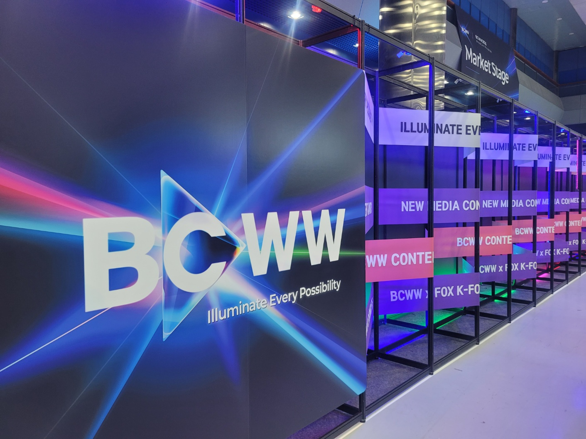
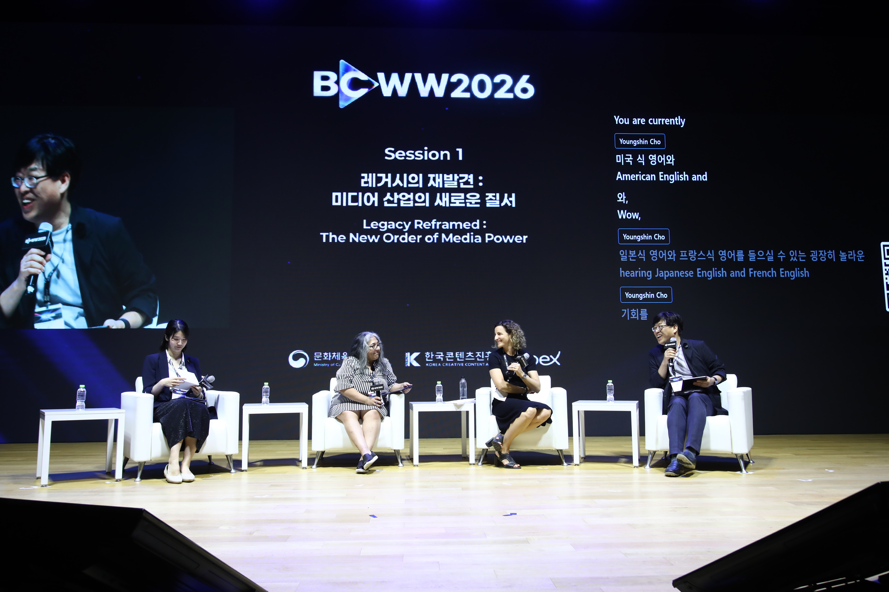
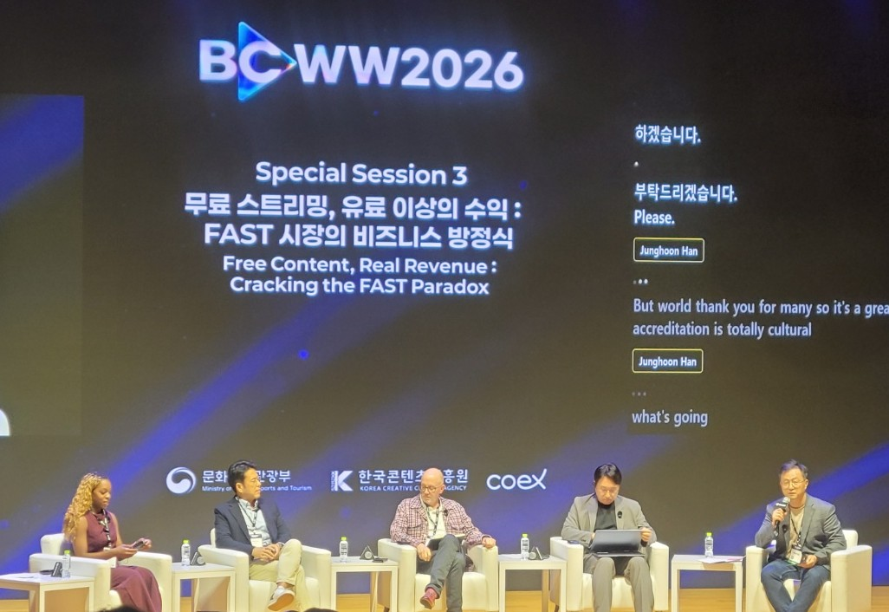
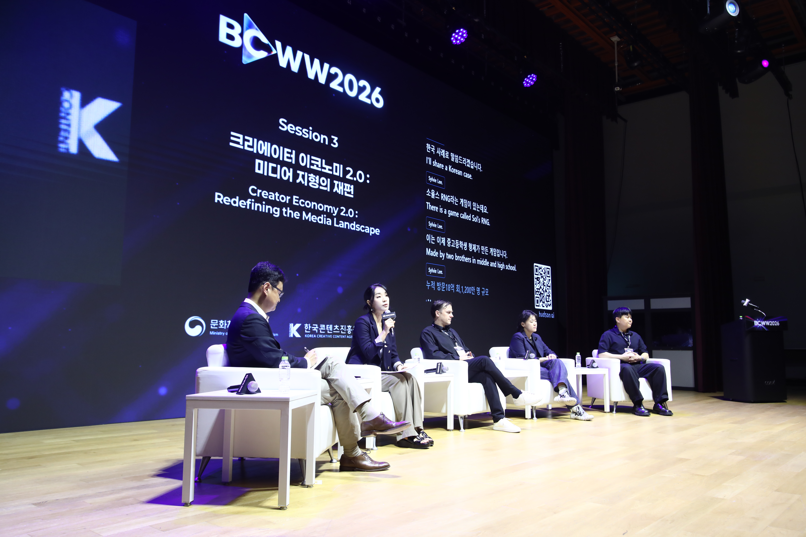
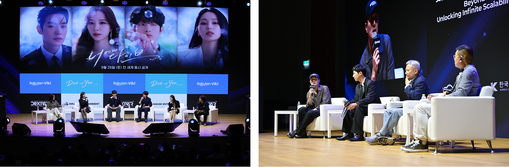
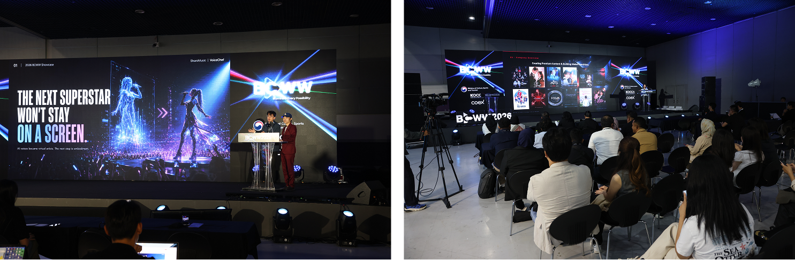
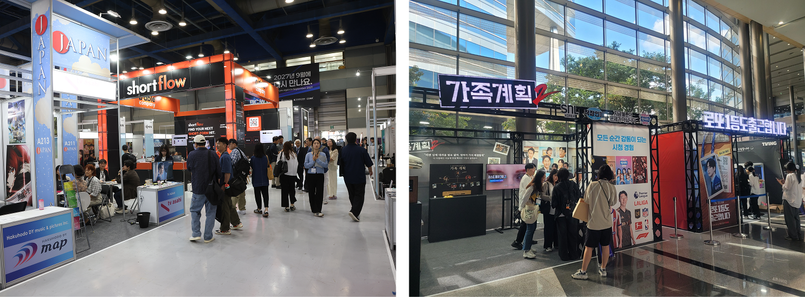

[그림 1] <2026 BCWW 로고와 슬로건>
(출처: 한국콘텐츠진흥원)
올해 스페셜 세션 3개와 세션 8개로 구성되었던 BCWW 콘퍼런스의 핵심 키워드는 ‘새로움’과 ‘변화’로 나타낼 수 있을 것으로 보인다. 제작 현장 너머를 바라보는 새로운 관점에서부터 미디어산업 패러다임의 변화까지 포맷, OTT, FAST, 숏폼, AI 기반 콘텐츠, 국제공동제작, 글로벌 IP 등 다양한 분야를 들여다보는 의미 있는 자리였다.
특히 방송영상 업계는 변화한 환경에 적응하고 진일보하기 위한 다양한 모색을 구하고 있었다. 콘퍼런스의 첫째 날은 다양한 영상 생태계 구성원들로부터 이러한 고민을 집중적으로 들어본 시간이었다.
올해 콘퍼런스의 포문을 연 첫째 날 스페셜 세션 1 ‘컷(Cut) 너머의 세계: 배우 김남길’에서는 배우 김남길과 방송인 박경림의 대담이 진행됐다. 이날 김남길은 연기자를 넘어 이야기를 기획하는 제작자이자 쇼러너, 그리고 문화예술 비영리단체 ‘길스토리’의 대표로서 폭넓은 시각을 공유했다. 그는 독자적인 IP(지식재산권)의 중요성과 한국 고유 콘텐츠에 대한 애정을 드러내는 한편, 국가 간 상호문화 존중의 가치도 함께 역설했다. 특히 OTT 확산에 따른 산업 지형의 변화와 K-콘텐츠의 위기를 체감하고 있으나, 이를 새로운 도약의 기회로 전환해야 한다고 짚으며 급변하는 시대 속 대중문화예술인의 사회적 책임감을 강조했다.

[그림 2] <2026 BCWW> 스페셜 세션 1, ‘컷(Cut) 너머의 세계: 배우 김남길’ 현장 사진
(출처: 연합뉴스)
같은 날 이어진 스페셜 세션 2 ‘Format Remix: 국경과 플랫폼을 넘나드는 새로운 포맷 문법’에서는 북미, 영국, 튀르키예의 글로벌 바이어들이 패널로 참여해 K-포맷의 현재와 미래를 심도 있게 논의했다. 이날 발표를 맡은 K7 미디어의 트랑 응우옌(Trang Nguyen) 아시아·태평양 및 중동·아프리카 매니저는 <Tracking the Giants> 보고서 발표를 통해 글로벌 시장에서 새로 제작된 리메이크 드라마 5편 중 1편 이상이 한국 작품일 정도로 스크립트 포맷은 독보적 인기를 누리고 있으나, 논스크립트 분야의 존재감은 상대적으로 미미하다고 진단했다.
다만 <피의 게임>의 성과를 언급하며 한국형 리얼리티 포맷의 글로벌 경쟁력과 가능성 또한 입증되었다고 평가했다. 패널들은 글로벌 OTT의 급성장으로 인해 포맷 비즈니스 구조가 과거 전통적인 방송 중심 환경과는 완전히 달라졌다는 점에 뜻을 모았다. 북미 블링크49 스튜디오(Blink49 Studios)의 애덤 스타인먼(Adam Steinman) 글로벌 포맷·인수 부문 수석부사장은 최근 한국 포맷이 넷플릭스 등 글로벌 OTT 생태계에 편중된 고비용 구조로 흘러가는 점을 지적하며, “로컬 방송사들이 감당할 수 있는 예산 규모와 여러 국가에서 반복 제작이 가능한 지속성 높은 포맷이 필요하다”고 강조했다. 이어 영국 ITV 스튜디오(ITV Studios)의 엘라 우만스키(Ella Umansky) 포맷 인수 부사장은 가장 한국적인 고유의 시선이야말로 K-포맷의 핵심 경쟁력이라고 짚었다. 또한 이번 세션에서는 리메이크 계약 조건과 수익 구조의 최신 변화를 심도 있게 다뤘다. 스타인먼 수석부사장은 “미국에서 검증된 쇼러너와 작가를 초기부터 참여시키고 무드 릴(Mood Reel)과 포맷 바이블(Format Bible)을 준비해 구매 위험을 낮춰야 한다”며 “옵션료를 얼마나 많이 받느냐보다 누구와 어떤 파트너십을 맺느냐가 중요하다”고 강조했다.
첫째 날 콘퍼런스의 세 번째 순서로 진행된 세션1 ‘레거시의 재발견: 미디어산업의 새로운 질서’에서는 미국, 프랑스, 일본의 현장 전문가들이 패널로 참석해 스트리밍 시대에 로컬 방송사들의 전략적 행보를 살펴보았다. FAST 플랫폼 인수, 방송사 간 연합, 해외 직접 진출과 같은 다양한 레거시 미디어 사례를 공유했다. 특히 방송사의 핵심 자원인 광고 수익과 관련하여 미국 시장 전문가인 만샤 다스와니(Mansha Daswani) 스크린MDM(ScreenMDM) 편집총괄/설립자는 “방송사의 광고 경쟁력의 핵심은 이제 데이터 기반의 광고 타깃팅”이라고 언급했다. 일본 민영방송사 TBS의 토모미 나가야마(Tomomi Nagayama) 테크 에반젤리스트(Technology Evangelist)는 “방송사와 OTT 간 홀드백을 유지하는 방식이 광고 수익 유지를 가능하게 한다”고 보았으며, 일본 민영방송사 연합 OTT 플랫폼 ‘티버(TVER)’의 설립에는 이와 같은 배경이 있음을 언급했다. 이날 좌장을 맡은 조영신 미디어엔터연구소 C&X 대표는 로컬 방송사들이 현재의 위기에서 생존하고 지속하기 위해서는 로컬 시장에 충실해야 하며, 또한 디지털과 아날로그가 함께 가야 함을 강조했다.

[그림 3] <2026 BCWW> 세션1 ‘레거시의 재발견: 미디어산업의 새로운 질서’ 현장 사진
(출처: 한국콘텐츠진흥원)
첫째 날 마지막으로 진행된 세션2 ‘서로 다른 출발점, 같은 목적지: OTT의 지속적 진화와 비즈니스 패러다임의 변화’에서는 지속 가능한 성장이라는 공통의 지향점을 향해 나아가는 아시아태평양(APAC) 지역 주요 OTT 플랫폼들의 시장 경험과 전략을 공유하는 패널 토론이 이루어졌다. 미디어파트너스아시아(Media Partners Asia)의 디비아 티(Dhivya T) 콘텐츠 인사이트 실장은 스트리밍의 성장 동력으로 광고·스포츠·파트너십·콘텐츠·주목도를 꼽았다. 특히 광고의 경우 넷플릭스와 티빙 등의 구독자 절반가량이 이미 광고 요금제를 쓰고 있어 광고가 중요한 추가 수익원이 되고 있다고 진단했다. 넷플릭스의 일본 월드베이스볼클래식(WBC) 중계권 사례를 통해 스포츠가 신규 이용자를 광고 요금제로 끌어들이고 있음을 지적하기도 했다. 그 외에도 HBO맥스와 tvN의 파트너십, 플랫폼 간에 이용자를 붙잡기 위한 주목도 경제로 비즈니스 패러다임의 변화를 분석했다.
둘째 날의 스페셜 세션 3 ‘무료 스트리밍, 유료 이상의 수익: FAST 시장의 비즈니스 방정식’ 또한 레거시 미디어가 다음 단계로 나아가기 위한 또 하나의 활로로서 FAST 시장의 가능성에 대해 논의하는 자리였다. 미국의 FAST 서비스 사업자인 투비(Tubi)에서 콘텐츠 머천다이징을 담당하는 이마니 발라드(Imani Ballard) 선임(Senior Associate)이 발제를 통해 K-콘텐츠가 젊은 층의 팬덤을 중심으로 확장된 반면에 FAST는 중장년층을 중심으로 이용되고 있다고 발표했다. 특히 50~64세가 가장 적극적으로 FAST를 시청하는 연령대로 나타났으며, 65세 이상에선 FAST 이용시간이 넷플릭스를 넘어선 것으로 분석했다. 이마니 발라드는 “FAST 채널을 통해 K-콘텐츠의 수용자 층을 확대하기 위해서는 플랫폼 내 콘텐츠 노출에 제한을 두지 않고 다양한 한국문화와의 접점을 제공함으로써 시청자를 한국 문화 자체를 소비하는 소비자로 만드는 것이 중요하다”고 보았다. 관련하여 패널로 참석한 월(Wurl) 아시아태평양 전략제휴 총괄 존 준(John Jun), 글로벌커넥츠미디어(Global Connects Media) 대표 더글러스 몽고메리(Douglas Montgomery), 스마트미디어렙(Smart Media Rep) 전승훈 대표가 좌장을 맡은 케이엔터테크허브(K-EnterTech Hub) 한정훈 대표와 함께 시장, 수익, K-콘텐츠라는 세 가지 키워드를 중심으로 FAST에 대한 토론을 진행했다.

[그림 4] <2026 BCWW> 스페셜세션 3 ‘무료 스트리밍, 유료 이상의 수익: FAST 시장의 비즈니스 방정식’
(출처: 한국콘텐츠진흥원)
기존의 방송 영역이 디지털 플랫폼의 영역으로 확장되면서 새로운 구성원들이 영상산업 생태계 구성원들로 합류하고 숏폼과 같은 새로운 포맷이나 생성형 AI 기술과 같은 신기술을 활용한 다양한 시도가 이루어지고 있다. 올해 BCWW 콘퍼런스에서는 빠르게 변화하고 있는 이들의 현장 사례를 집중적으로 조명했다.
콘퍼런스 둘째 날 세션 3 ‘크리에이터 이코노미 2.0: 미디어 지향의 재편’은 이 중 유튜브를 중심으로 활동하는 크리에이터의 IP와 AI를 중심으로 논의했다. 구글 코리아의 서황욱 총괄은 발제를 통해 유튜브의 지난 20년사를 ‘시작 단계-2010년대 디지털 콘텐츠의 산업화 단계- 2020년 이후의 다양화 단계’의 세 단계로 구분지어 소개했다. 특히 2020년 이후 다양화 단계는 콘텐츠의 포맷, 이용자가 사용하는 디바이스, 수익 구조, 콘텐츠 소비 행위, 콘텐츠 제작 방식의 측면에서 이루어지고 있다고 보았다. 또한 콘텐츠 제작에 AI를 활용한 사례로 ‘오토더빙’을 언급하며, 이 기술을 통해 한국 창작자들의 글로벌 활동을 지원하고 있다고 소개했다. 이어진 패널 토론에서는 로블록스 이슬기 대외정책 총괄이 로블록스의 IP라이선싱 모델을 소개하며 “로컬 크리에이터의 아이디어를 글로벌 IP 비즈니스로 확장하는 것이 로블록스 크리에이터 이코노미의 다음 단계”임을 밝혔다. 리틀 시네마 창립자이자 크리에이터 총괄인 제이 린스키는 “IP의 근원인 이야기를 만들 때 팬과 팬덤을 항상 염두에 두는 것이 중요”함을 강조했다. 국내에서도 테오와 어썸엔터테인먼트가 패널로 참석했다. 과거 방송사 경험을 가지고 현재 예능 콘텐츠를 제작하는 테오의 오세린 PD는 “시청자가 받아들이는 방식에 대한 고민을 많이 한다”고 언급하면서 최근 콘텐츠를 쇼핑하듯이 골라 담는 시청자에게 숏폼은 롱폼으로 넘어가는 데 중요한 창구라고 제시했다. 어썸엔터테인먼트의 모양태 본부장은 “데이터를 바탕으로 콘텐츠를 만드는 방식을 추구하고 있다”고 밝히며, 유튜브는 기본적으로 1인 미디어 기반의 플랫폼이기 때문에 크리에이터라는 개념을 가지고 다양한 업무를 한다는 점에서 기존 방송과는 차이가 있다고 보았다. 참석한 패널들은 AI와 창의성에 대해서는 AI 기술은 인간의 창의성을 위한 도구라고 공통적인 의견을 모았다.

[그림 5] <2026 BCWW> 세션 3 ‘크리에이터 이코노미 2.0: 미디어 지향의 재편’ 현장 사진
(출처: 한국콘텐츠진흥원)
다음으로 급격하게 떠오르고 있는 숏폼에 대한 논의가 세션 4 ‘무한 확장성(Scalability): 숏폼이 바꾼 미디어 패러다임과 비즈니스 모델’에서 이루어졌다. 해당 세션은 1부와 2부로 나누어 진행되었다. 1부는 KT스튜디오지니의 정근욱 대표와 뷰(Viu)의 마리안 리(Marianne Lee) 최고콘텐츠책임자, 숏폼 플랫폼 릴숏을 운영하고 있는 크레이지 메이플 스튜디오의 베라 리우(Vera Liu) UA 디렉터가 패널로 참석해 숏폼 시장의 성장 가능성과 수익모델을 논의했다. 리우 디렉터는 “글로벌 숏폼 드라마 시장의 경쟁 기준이 제작 편수에서 완주율과 콘텐츠 품질로 이동하고 있음”을 지적하며, “이러한 시장의 경향이 콘텐츠 경쟁력을 갖춘 한국에 새로운 기회가 될 것”으로 내다보았다. 실제로 릴숏은 이미 K-콘텐츠를 대상으로 초기 테스트를 진행하였으며 가족과 로맨스 소재에서 가능성을 확인했다고 밝혔다. 또한 “릴숏이 주목하는 미래 성장동력은 빠른 시간 내에 시청자의 관심을 잡을 수 있는 인기 IP(지식재산권)와의 협업과 제작 효율화를 높이는 AI(인공지능)”라고 언급했다. 한편 2부에는 이상엽 배우, 이병헌 감독, 오기환 감독이 패널로 참석하고 정덕현 대중문화평론가가 좌장을 맡아 숏폼 제작 경험과 시장의 가능성을 공유했다.
세션 5 ‘Prompt Industry: AI 기반 숏폼 콘텐츠, <무신귀환록> 쇼케이스’에서는 실제 숏폼 콘텐츠의 제작 사례를 다루었다. 먼저 글로벌 숏폼 플랫폼 넷숏(Netshort)의 앨리 리(Ellie Li) 비즈니스 개발 총괄이 생성형 AI 기술을 활용한 숏폼 콘텐츠 제작 환경의 패러다임 변화에 대해 기조연설을 했다. 엘리 리 총괄은 숏드라마 시장의 글로벌 성장세를 언급하며, AI가 숏드라마의 제작비 상승으로 인한 병목현상을 타계할 해법이 될 수 있다고 보았다. 이후에는 <무신귀환록> 쇼케이스를 통해 KT스튜디오지니가 제작한 AI 기반 숏드라마의 제작 공정을 공유하는 시간을 가졌다. <무신귀환록>은 실제 배우 연기와 AI 액션을 결합한 AI 무협 숏폼 드라마다. 기획단계부터 AI 제작 솔루션을 고려하고 격자무늬 벽으로 이루어진 그리드 월(Grid Wall) 기반의 최적화 세트가 있는 AICS(AI Cinema Studio) 무대에서 촬영하고 자체 AI 제작 플랫폼을 통해 작업한 일련의 과정을 소개했다. 이어 <무신귀환록>의 이창우 감독이 실제 제작 과정을 통해 현장에서 체감한 기존 제작방식과의 차이와 확장 가능성에 대해 논의했다.
세션 6 ‘K-드라마의 새로운 성장동력: 라쿠텐 비키와 제작사의 협력모델 <너에게 다이브>’ 1부에서는 라쿠텐 비키 홍재희 한국오피스 대표가 비키의 콘텐츠 소비 경향과 공동 제작 확대 전략을 발표하고, 2부에서는 덱스터스튜디오의 자회사인 콘텐츠 제작사 덱스터픽쳐스가 첫 오리지널 IP 제작 드라마 <너에게 다이브(DIVE INTO YOU)>를 통한 글로벌 협업 사례와 IP 사업 확장 전략을 공유했다. <너에게 다이브>는 글로벌 OTT 라쿠텐 비키(Rakuten Viki)의 본격적인 한국 드라마 투자 작품이자, 일본 종합 엔터 기업 아뮤즈(Amuse)의 한국법인 아뮤즈엔터테인먼트(Amuse Entertainment)가 공동 제작에 참여한 글로벌 합작 프로젝트다. 이번 국제공동제작모델은 IP의 소유권과 리메이크 및 시즌제 판권, OST·출판·굿즈·팝업전시 등 2차 사업권까지 덱스터픽쳐스가 공동 보유하는 한편, 라쿠텐 비키, 아뮤즈와 같은 글로벌 파트너사들은 프로젝트 지분 투자 및 전폭적인 글로벌 마케팅 협력을 통해 장기적인 IP 가치 극대화에 동참하는 형태로 추진됐다는 점에서 ‘전략적 공동 성장 모델’로 주목받았다.

[그림 6] <2026 BCWW> 현장 사진
(좌) 세션 4 ‘무한 확장성(Scalability): 숏폼이 바꾼 미디어 패러다임과 비즈니스 모델’ 2부
(우) 세션 6 ‘K-드라마의 새로운 성장동력: 라쿠텐 비키와 제작사의 협력모델 <너에게 다이브>’ 2부
(출처: 한국콘텐츠진흥원)
행사 마지막 날인 셋째 날은 글로벌 IP와 팬덤을 주제로 콘텐츠가 어떻게 더 큰 사업으로 확장되는지 살펴보았다.
세션 7 ‘글로벌 IP의 미래: 팬덤, 오디언스, 그리고 비즈니스 혁신’에서는 NBC 유니버설의 린필드 응(Linfield Ng) 부사장이 글로벌 스튜디오가 하나의 IP를 여러 시장으로 확장하는 방식을 사례 중심으로 짚어주었다. 린필드 부사장은 화면을 넘는 팬덤 확장 전략이 중요하다고 강조하면서 유튜브와 소셜 미디어 플랫폼과 같은 세컨드 윈도우를 통해 바이럴 클립으로 신규 팬을 유입한 사례를 공유했다. 그 외에도 오프라인 행사, 체험과 굿즈, 현지화 전략 등을 통해 팬덤을 확장할 수 있다고 보았다. 특히 팬덤이 확인된 유튜브 오리지널 콘텐츠를 TV 포맷으로 확장하는 시도를 하고 있음을 밝혔다. 린필드 부사장은 한 나라에서의 성공이 다른 나라의 성공을 유지하지는 않기 때문에 본질을 유지하면서 현지 문화에 맞추는 균형이 성공적인 글로벌로의 IP 확장 방법임을 강조했다. MBC의 사내벤처로 출발하여 MBC IP 기반 캐릭터 챗봇 서비스를 운영하고 있는 모다이브의 임다솔 대표는 팬덤은 시청 규모보다 참여의 영역이라고 보았다. AI 캐릭터 채팅은 작품 종료 후에도 캐릭터의 생명력을 이어 주는 역할을 하고 있어 IP 확장에 기여한다는 것이다. 웹툰 작가 박태준이 설립한 웹툰 전문 제작사 더그림엔터테인먼트(The Grim Entertainment)의 안형수 대표는 사업 아이템보다는 캐릭터 서사에 집중함으로써 팬덤을 구축한다고 언급했다. 이날 참석자들은 공통적으로 IP의 본질은 결국 좋은 스토리와 캐릭터이고, 그 위에 팬의 참여가 쌓여 사업이 되지만 결국은 팬 없이는 쇼와 비즈니스도 없음을 강조했다.
행사 3일차 마지막 콘퍼런스 세션으로 운영된 ‘아티스트 오디세이: 음악 팬덤을 넘어 글로벌 미디어 IP로의 진화’에서는 하이브 미디어 스튜디오(HMS)의 서계원 대표가 음악 엔터사에게 IP가 무엇인지를 화두로 HMS의 콘텐츠 제작, 플랫폼 유통, 수익화의 세 가지 축을 자사 소속 아티스트인 방탄소년단(BTS)과 코르티스의 사례를 중심으로 소개했다. 패널로 참석한 일본 에이벡스 픽처스(Avex Picture)의 노부히로 마에노(Nobuhiro Maeno) 이사는 일본 애니메이션은 10~15년의 장기 전개를 전제로 사업을 설계한다고 밝히면서 일본의 미디어 믹스 방식을 소개했다. 스튜디오 리얼라이브의 김종민 대표는 하이브가 "휴먼 IP를 어떻게 확장할까"에서 출발한다면, SM은 "새로운 미디어가 어떻게 팬을 만날 수 있을까"에서 출발한다는 차이가 있다고 언급했다. AI, VR, VFX, 실시간 인터랙션을 연구하지만 핵심은 기술 구현이 아니라 커뮤니케이션이라는 것이다. 좌장을 맡은 차우진 엔터문화연구소 대표는 결국 아티스트도 미디어가 될 수 있으며, 앞으로는 인플루언서처럼 기존에 미디어로 정의하지 않던 것들이 미디어 역할을 하게 될 것이라고 보았다. 버추얼이냐 실체가 있느냐보다 커뮤니케이션의 밀도가 중요해질 것이라는 것이다.
콘퍼런스 밖에서는 전시마켓을 통한 상담, 쇼케이스와 워크숍, 그리고 K-OTT의 오리지널 홍보전을 통해서 국내외 다채로운 콘텐츠가 소개되었다.
전시마켓에서는 총 2,540건의 상담이 진행되었으며, 콘텐츠 유통을 넘어 공동제작, 포맷, 지식재산(IP) 비즈니스 등 다양한 분야의 협력 기회가 논의됐다. 올해는 MENA(중동·북아프리카) 지역 최대 미디어 그룹인 사우디아라비아 엠비씨 그룹(MBC Group)이 신규 참여했다. 일본 NHK·후지TV, 중국 아이치이, 미국 폭스 엔터테인먼트 등 해외 기업이 참여했으며, 브라질 티비 글로보, 멕시코 이마헨 티비, 캐나다 벨 미디어, 인도 지(ZEE) 등 신흥시장 유력 바이어도 초청됐다.
쇼케이스는 방송 영상 콘텐츠 부문의 25개사가 참여한 콘텐츠 쇼케이스와 비드라마 방송 포맷 부문의 13개사가 참여한 K-포맷 쇼케이스로 구분되어 진행됐다. 쇼케이스 행사에는 KBS, MBC, SBS 등의 지상파와 함께 방송영상제작사, 포맷 전문 제작사, 영화사, AI 기반 제작사, 숏드라마 제작사, 플랫폼 사업자 등 다양한 성격의 사업자가 참여했다.

[그림 7] <2026 BCWW> 쇼케이스 현장 사진
(출처: 한국콘텐츠진흥원)
글로벌 워크숍에는 일본, 싱가포르, 중동 국가가 참여했다. 행사 첫날 일본 총무성과 영상산업진흥기구(VIPO)가 공동 기획한 제작 워크숍에는 100여 명 이상이 참석해 드라마 프로젝트 15건의 피칭과 네트워킹을 진행했다. 둘째 날에 진행된 싱가포르 워크숍에서는 비치파우스 펙쳐스 등의 공동제작 모델을 소개하였고, 뒤이어 이루어진 중동 워크숍에서는 사우디 투자부(MISA)가 사우디의 콘텐츠 투자 환경을 소개했으며, UAE 스타즈플레이가 키즈 콘텐츠를 중심으로 K-콘텐츠의 중동 진출 전략을 다뤘다.
K-OTT 오리지널 홍보존에서는 K-OTT 오리지널 주요 공개 예정작을 전시하고 체험존을 운영했다. 티빙은 <로또 1등도 출근합니다>, 쿠팡플레이는 <가족계획2>와 <직장인들 시즌3>을 선보였다.

[그림 8] <2026 BCWW> (좌) 전시 마켓 현장 (우) K-OTT 체험존 이미지 현장
(출처: 한국콘텐츠진흥원)
2026년 방송영상시장은 그야말로 격변의 시기를 지나고 있다. AI는 하루가 다르게 진화하고 있으며, 글로벌로 확장된 한국 콘텐츠는 ‘K’라는 영예로운 국가 브랜드를 얻었지만, 그만큼 대내외 환경의 도전도 거세져 감내해야 할 몫 또한 커졌다. 올해 BCWW는 이러한 고민을 함께 나누는 자리인 동시에, K-콘텐츠가 다음 단계로 나아가기 위해 글로벌 협력자들과 무엇을 할 수 있을지 진지하게 모색하는 장이었다.